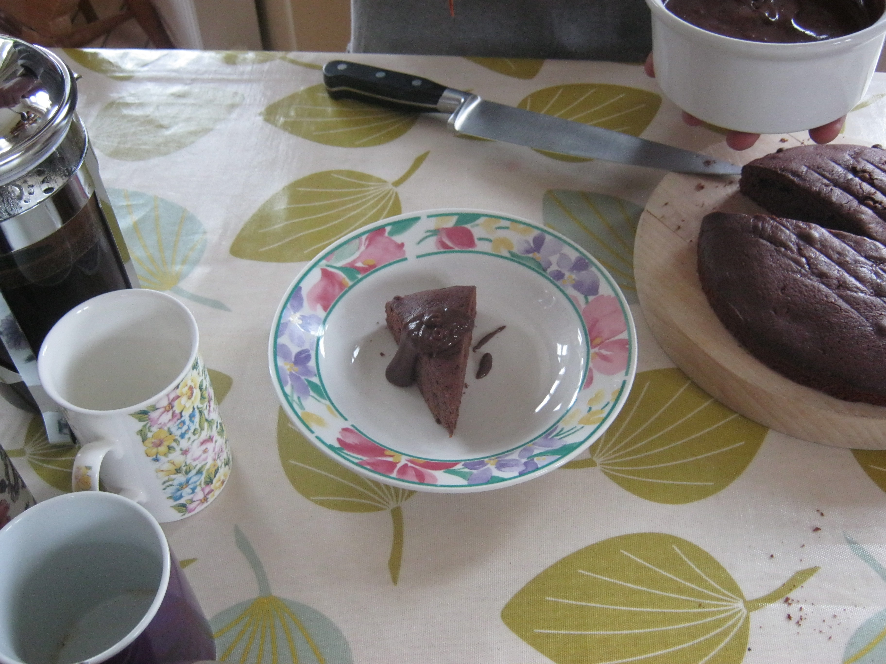

Como es de esperar, al abrir al público la posibilidad de jugar con los softwares de los ordenadores, era cuestión de tiempo que la gente se inventase nuevos lenguajes de programación, algunos más locos y complicados que otros.
He aquí artículos en los que se muestran dichos lenguajes, cuyo aprendizaje y creación definitivamente fue producto de mucho (quizás demasiado) tiempo libre, esfuerzo e ingenio
Video sobre este tema:
Brainfuck es un lenguaje esotérico bastante conocido. Consiste de 8 comandos, cada uno representado con un carácter.
Fue creado por Urban Müller en 1993, en un intento de crear el compilador más pequeño posible para Amiga OS 2.0
El hello world en este lenguaje es:
++++++++[>++++[>++>+++>+++>+<<<<-]>+>+>->>+[<]<-]>>.>---.+++++++..+++.>>.<-.<.+++.------.--------.>>+.>++.
Chef es un lenguaje cuyos programas estan escritos como una receta.
Fue creado por David Morgan-Mar en 2002.
Un posible hello world en este lenguaje tiene esta pinta:
Hello World Cake with Chocolate sauce.
This prints hello world, while being tastier than Hello World Souffle. The main
chef makes a " world!" cake, which he puts in the baking dish. When he gets the
sous chef to make the "Hello" chocolate sauce, it gets put into the baking dish
and then the whole thing is printed when he refrigerates the sauce. When
actually cooking, I'm interpreting the chocolate sauce baking dish to be
separate from the cake one and Liquify to mean either melt or blend depending on
context.
Ingredients.
33 g chocolate chips
100 g butter
54 ml double cream
2 pinches baking powder
114 g sugar
111 ml beaten eggs
119 g flour
32 g cocoa powder
0 g cake mixture
Cooking time: 25 minutes.
Pre-heat oven to 180 degrees Celsius.
Method.
Put chocolate chips into the mixing bowl.
Put butter into the mixing bowl.
Put sugar into the mixing bowl.
Put beaten eggs into the mixing bowl.
Put flour into the mixing bowl.
Put baking powder into the mixing bowl.
Put cocoa powder into the mixing bowl.
Stir the mixing bowl for 1 minute.
Combine double cream into the mixing bowl.
Stir the mixing bowl for 4 minutes.
Liquefy the contents of the mixing bowl.
Pour contents of the mixing bowl into the baking dish.
bake the cake mixture.
Wait until baked.
Serve with chocolate sauce.
chocolate sauce.
Ingredients.
111 g sugar
108 ml hot water
108 ml heated double cream
101 g dark chocolate
72 g milk chocolate
Method.
Clean the mixing bowl.
Put sugar into the mixing bowl.
Put hot water into the mixing bowl.
Put heated double cream into the mixing bowl.
dissolve the sugar.
agitate the sugar until dissolved.
Liquefy the dark chocolate.
Put dark chocolate into the mixing bowl.
Liquefy the milk chocolate.
Put milk chocolate into the mixing bowl.
Liquefy contents of the mixing bowl.
Pour contents of the mixing bowl into the baking dish.
Refrigerate for 1 hour.
Como bonus, si sigues la receta y cocinas la tarta, queda asi:
INTERCAL es una abreviatura para Compiler Language With No Pronounceable Acronym (por motivos obvios)
INTERCAL tiene una sintaxis curiosa, que no podriamos explicar brevemente.
El hello world en este lenguaje es:
DO ,1 <- #13
PLEASE DO ,1 SUB #1 <- #238
DO ,1 SUB #2 <- #108
DO ,1 SUB #3 <- #112
DO ,1 SUB #4 <- #0
DO ,1 SUB #5 <- #64
DO ,1 SUB #6 <- #194
DO ,1 SUB #7 <- #48
PLEASE DO ,1 SUB #8 <- #22
DO ,1 SUB #9 <- #248
DO ,1 SUB #10 <- #168
DO ,1 SUB #11 <- #24
DO ,1 SUB #12 <- #16
DO ,1 SUB #13 <- #162
PLEASE READ OUT ,1
PLEASE GIVE UP
Piet es un lenguaje inspirado por el arte del pintor Piet Mondrian.
Fue creado por David Morgan-Mar en 2002
Un posible hello world en este lenguaje se ve tal que asi:

Volver al índice